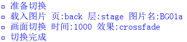

KAG 的每一层又可以分成两部分，表页 fore 、里页 back 。
所有表页的内容组成了画面上显示的东西，而里页的内容，画面上是看不到的。
里页主要是在使用[trans]（画面切换效果）之前，用于预载想要显示的内容的。（转自KAG官方文档汉化版）
如果将吉里吉里/KAG的所有层理解成一叠卡片的话，表页就是卡片当前朝向屏幕的一面。
那么，切换就是把所有的卡片翻面，让表页和里页互换。
在NVL里，显示人物背景等等，都是将加载和切换封装成一个指令，因此基本不会用到页这个概念。
只有在少数情况下会需要指定表页或者里页，例如需要两张角色图片一起改变表情，或者在自制界面上显示一系列图片和按钮。
这时候请记住一个简单的辨别方法：
假如不需要过渡效果，只想立刻显示一张图片，请指定为加载到表页；
假如需要过渡效果，例如从透明开始渐渐显示（淡入），请指定为加载到里页。
如果所有的图片、文字等等都是瞬间跳出来，虽然速度很快，但会显得很突兀。
因此就像PPT每一页出现时都可以有不同效果一样，吉里吉里/KAG也提供了画面切换的功能。
通常来说，切换是这样进行的——
例如只改变背景图片，而现在显示中的人物、对话框等都不做任何处理保持原样。
这样的切换写成未封装指令（KAG官方指令）的话，就是下面这段：
[backlay]
[image layer=stage page=back visible=true storage="BG01a"]
[trans method=crossfade time=1000]
[wt]
使用THE NVL Maker的脚本编辑器打开，显示如下：

将以上的代码添加一行，变成下面这样，就可以做出让背景和人物一起显示的效果了。
[backlay]
[image layer=stage page=back visible=true storage="BG01a"]
[image layer=0 page=back visible=true storage="fg01_01" pos=center]
[trans method=crossfade time=1000]
[wt]
文字和按钮则和图片不一样，表页和里页的指定，是通过设定当前消息层的表/里来进行的，因此不需要特别在显示文字或按钮的指令里说明。
而只需要在显示按钮和文字之前，使用如下指令即可。
[current layer=message0/message1/…… page=fore/back]
例如，想要在message1上显示自己定义的按钮，并通过切换显示出来：
[backlay]
[current layer=message1 page=back]
[locate x=0 y=0]
[button normal="按钮图片名"]
[trans method=crossfade time=1000]
[wt]
吉里吉里内建了一些画面切换方式，包括淡入、滚动、根据规则图片切换等。
加上扩展的效果插件extNagano.dll的补充（水波、翻页、3D变形等），可以使用的效果共有二十种以上。
更详细的关于切换效果的说明，
可以查看KAG3DOC，
下载extNagano.dll的官方范例，
以及KAGEX切换及动态效果范例。